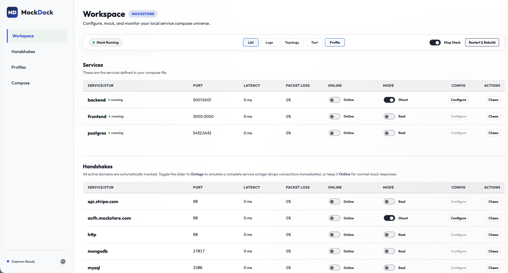
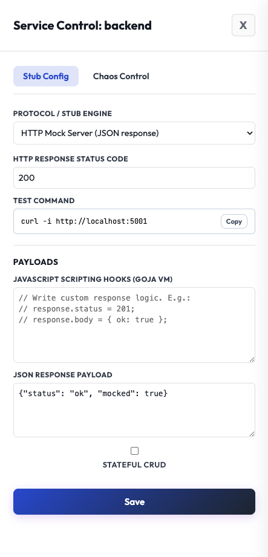
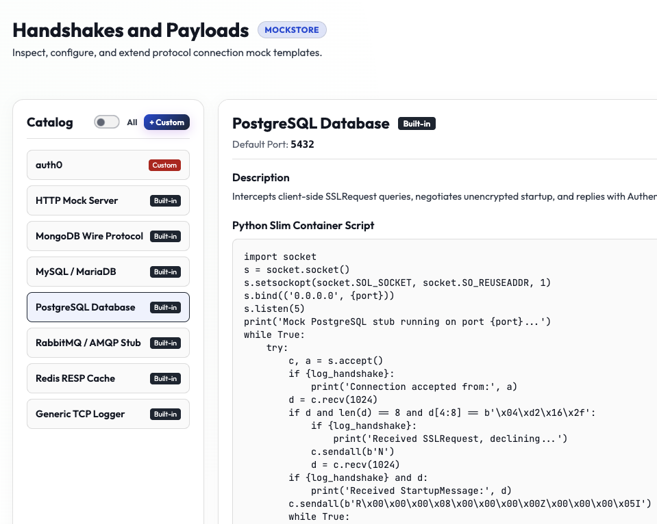

The MockDock app is a desktop sandbox engine for developers. Mock third-party APIs, simulate network failures, share states across stubs, and verify integrations entirely offline.
curl -sSL https://mockdockapp.github.io/install.sh | bash



| Scenario | Developer Challenge | MockDock Solution |
|---|---|---|
| Offline Sandbox Testing | Mocks break during flights, train commutes, or local ISP outages. | Runs 100% locally. Keep building, coding, and testing database handshakes with no active internet connection. |
| Fault Tolerance & Chaos | Simulating rate-limiting (e.g. Stripe 429s) or high latency is difficult in staging. | One-click Chaos Control sliders to inject latency, disconnects, or packet loss directly at the network container boundary. |
| Unimplemented APIs | Frontend and backend teams are blocked waiting for other API endpoints to go live. | Write lightweight JavaScript mocks with MockDock's Goja engine to spin up functional stubs immediately. |
| Dynamic Handshakes | Static JSON mocks cannot handle JWT auth flows or checkout callbacks. | Equips scripting hooks with namespaced shared state cache and outgoing fetch clients for stateful, multi-step sandboxes. |
Run the installation curl command in your terminal and visit http://localhost:11800/.
Go to the Profiles tab and create a new Universe by adding a docker-compose.yml file locally or from a URL.
Go to the Workspaces screen, put a service into Ghost Mode, and select Configure.
On the **Configure** tab, try setting up a basic response or try enabling Stateful CRUD.
Restart and rebuild MockDock using the **Restart & Rebuild** control button.
Visit your test application and try it based on the new Ghost configuration.
Visit the **Profiles** tab and save the active profile for the test configuration.
Verify the newly saved profile appears in the registry list on the **Profiles** tab.
Go to the **Compose** screen and run the **Security & Health Audit** on your compose file.
Click on the **gear icon** in the bottom-left corner of the sidebar to manage licenses or trust the Root CA cert.
| Feature | Description | Est. Developer Savings |
|---|---|---|
| Dynamic SNI Hijacking | Intercepts HTTP/S calls to external domains at the container edge on-the-fly. | 1 - 2 Hours / Project |
| Dynamic SSL Signing | Generates SSL certificates on-the-fly signed by a trusted local root CA. | 3 - 4 Hours / Setup |
| Goja Scripting hooks | Runs embedded JavaScript stubs containing outgoing HTTP fetch clients. | 20 - 30+ Hours / Sandbox |
| Chaos Control | Injects container-level network latency, loss, and disconnection. | 1 - 2 Days / QA Sprint |
| Universe Readiness Checklist | Runs real-time diagnostics on compose ports and Docker sockets. | 30 - 60 Mins / Onboarding |